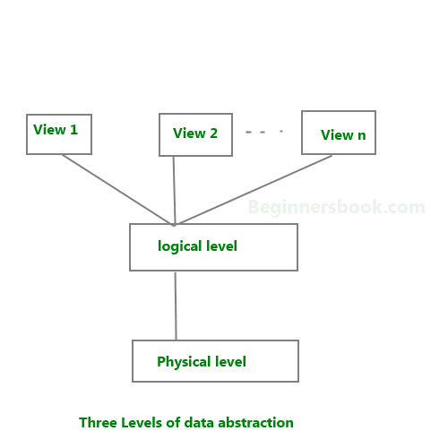

Database systems are made-up of complex data structures. To ease the user interaction with database, the developers hide internal irrelevant details from users. This process of hiding irrelevant details from user is called data abstraction.

We have three levels of abstraction:
Physical level: This is the lowest level of data abstraction. It describes how data is actually stored in database. You can get the complex data structure details at this level.
Logical level: This is the middle level of 3-level data abstraction architecture. It describes what data is stored in database.
View level: Highest level of data abstraction. This level describes the user interaction with database system.
Example: Let’s say we are storing customer information in a customer table. At physical level these records can be described as blocks of storage (bytes, gigabytes, terabytes etc.) in memory. These details are often hidden from the programmers.
At the logical level these records can be described as fields and attributes along with their data types, their relationship among each other can be logically implemented. The programmers generally work at this level because they are aware of such things about database systems.
At view level, user just interact with system with the help of GUI and enter the details at the screen, they are not aware of how the data is stored and what data is stored; such details are hidden from them.
preparing for exams and limited time only….!
Amazing! nicely explained the topics.
I liked it.
Thank you…!
Need to understand Database quickly, the website does a great job! Many Thanks :)
Easy to understand if u don’t have much time u should prefer this
Wonderful Explanation. Helps to understand the levels of database and data abstraction in one shot.
Thank you for sharing such a simple explanation of dbms concept
it is perfectly good in terms of user interface such as font used and making bold for important topics.
awesome explanation!!!!
request you to add the next topic link in the bottom of every page, it would be helpful to navigate to the next topic once we completed the current topic